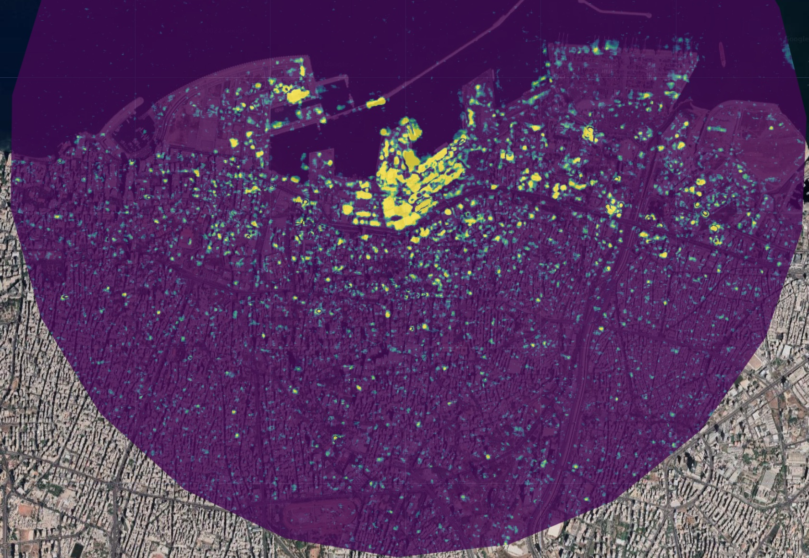

CASA00025 Group Project - AquaTrend Mapper
Project Summary
Fill in the sections below to provide a brief summary of your project. Each section should have no more than 100 words. Do not edit any of the headings.
Problem Statement
What is the problem you’re trying to address using this application?
End User
Who are you building this application for? How does it address a need this community has?
- Policy makers. The application provides policy makers with a real-time water body change monitoring tool for Poyang Lake, which helps policy makers to develop and optimize water management measures.
- Researchers. The application supports their research in the field of water resources management and environmental change by providing tools for water body extraction and time series analysis in Poyang Lake.
- Public. The application provides a transparent and intuitive platform for the public to understand the real-time situation and change trends of Poyang Lake through visualization of data and charts, and to raise the public’s attention to environmental issues.
Data
What data are you using?
Time: December 1, 2015 to November 30, 2021 Location: Poyang Lake, China Sentinel-1 satellite imagery: Multiview processed Sentinel IW GRD class imagery. The radar image is imaged in IW mode with VV polarization.
Reasons: 1. Sentienl-1’s SAR data are not constrained by weather, cloud cover, etc. 2. SAR data has been identified for frequent monitoring of surface water 3. SAR specular reflectivity separates open water from land surface
Data division: Spring: March-May; Summer: June-August; Autumn: September-November; Winter: December-February (next year). Because, Poyang Lake wet season: June-August, normal water season: April, May and September, dry season: October-February of the next year (Yao, et al., 2021).
Methodology
How are you using this data to address the problem?
- Screening, cropping, smoothing preprocessing of Sentinel-1 radar image.
- Optimal thresholds were obtained using histograms generated from VV polarization data and calling otsu functions.
- Mark pixels smaller than the threshold as bodies of water. Make non-water bodies be considered transparent.
- Calculate sum of the number of times a water body is present at each pixel point.
- Total number of occurrences of water bodies / Total number of images = Frequency of occurrence of water bodies per pixel point. The frequency is filtered to be higher than a set threshold, thus showing areas of frequent water bodies.
Interface
How does your application’s interface work to address the needs of your end user?
The Application
Replace the link below with the link to your application.
How it Works
Use this section to explain how your application works using code blocks and text explanations (no more than 500 words excluding code):
Pre-processing
Define the extent of the study area, import and preprocess Sentinel-1 satellite images, and use filters to select images with specific polarization modes (VV polarization modes), modes of operation (interleaved observation modes), and orbital attributes (ascending intersecting orbits).
// Defining the geographic extent of the Poyang Lake
var poyangLakeJiujiang = ee.Geometry.Polygon([
[[115.82,29.40],[116.77,29.40],[116.77,28.35],[115.82,28.35]]
]);
// Adding a Lake District Scope
var aoi = poyangLakeJiujiang
Map.centerObject(aoi);
// Importing Sentinel One data and filtering it
var s1 = ee.ImageCollection('COPERNICUS/S1_GRD')
.filter(ee.Filter.listContains('transmitterReceiverPolarisation', 'VV'))
.filter(ee.Filter.eq('instrumentMode', 'IW'))
.filter(ee.Filter.eq('orbitProperties_pass', 'ASCENDING'))Cropping of remote sensing satellite images for specific study areas and times.
.filter(ee.Filter.contains({leftField: ".geo", rightValue: aoi})) // The filter section contains images of the study area
.map(function(image){return image.clip(Map.getBounds(true))})Apply median filtering to smooth the VV band in the original image and add the smoothed band to the current image.
.map(function(image){return image.addBands(image.select('VV').focal_median(parseFloat('50'),'circle','meters').rename('VV_smoothed'))}); // smoothing
print(s1);Water extraction
Separate water body information from other surface features in the Sentinel-1 data by calculating an optimal threshold using the Otsu binarized image algorithm.
// Extraction of water bodies by binarization of Sentinel One data using the OSTU approach
var otsu = function(histogram) {
var counts = ee.Array(ee.Dictionary(histogram).get('histogram'));
var means = ee.Array(ee.Dictionary(histogram).get('bucketMeans'));
var size = means.length().get([0]);
var total = counts.reduce(ee.Reducer.sum(), [0]).get([0]);
var sum = means.multiply(counts).reduce(ee.Reducer.sum(), [0]).get([0]);
var mean = sum.divide(total);
var indices = ee.List.sequence(1, size);
var bss = indices.map(function(i) {
var aCounts = counts.slice(0, 0, i);
var aCount = aCounts.reduce(ee.Reducer.sum(), [0]).get([0]);
var aMeans = means.slice(0, 0, i);
var aMean = aMeans.multiply(aCounts)
.reduce(ee.Reducer.sum(), [0]).get([0])
.divide(aCount);
var bCount = total.subtract(aCount);
var bMean = sum.subtract(aCount.multiply(aMean)).divide(bCount);
return aCount.multiply(aMean.subtract(mean).pow(2)).add(
bCount.multiply(bMean.subtract(mean).pow(2)));
});
return means.sort(bss).get([-1]);
};The histograms of the VV polarization bands in the images were calculated, and then the Otsu algorithm was used to calculate the optimal threshold to which the smoothed VV bands of the images were compared to generate the water body masks.
// Adding a water body mask as a band to S1
var add_waterMask = function(image){
// Calculation of histograms
var histogram = image.select('VV').reduceRegion({
reducer: ee.Reducer.histogram(255, 2)
.combine('mean', null, true)
.combine('variance', null, true),
geometry: aoi,
scale: 10,
bestEffort: true
});
// Thresholding via the OSTU algorithm
var threshold = otsu(histogram.get('VV_histogram'));
// Acquisition of water body masks
var waterMask = image.select('VV_smoothed').lt(threshold).rename('waterMask');
waterMask = waterMask.updateMask(waterMask);
return image.addBands(waterMask);
};
s1 = s1.map(add_waterMask);The frequency of water body occurrences was calculated by summing the total number of image elements of the water body mask in each image and dividing by the total number of water body mask images in the image collection.
// Calculate the frequency of occurrence of water bodies during the experiment
var min_occurence = 10;
var water_sum = s1.select('waterMask').reduce(ee.Reducer.sum());
var water_frequency = water_sum.divide(s1.select('waterMask').size()).multiply(100);
var water_frequency_masked = water_frequency.updateMask(water_frequency.gt(min_occurence));User interface
Generate a water body frequency map and legend based on the calculated frequency of occurrence of water bodies and add them to the map.
// Add study area Sentinel One median composites, water body frequency maps, and GIF maps
// Calculate the frequency of occurrence of water bodies during the experiment
var min_occurence = 10;
var water_sum = s1.select('waterMask').reduce(ee.Reducer.sum());
var water_frequency = water_sum.divide(s1.select('waterMask').size()).multiply(100);
var water_frequency_masked = water_frequency.updateMask(water_frequency.gt(min_occurence));
// Add Ribbon
function ColorBar(palette) {
return ui.Thumbnail({
image: ee.Image.pixelLonLat().select(0),
params: {
bbox: [0, 0, 1, 0.1],
dimensions: '300x15',
format: 'png',
min: 0,
max: 1,
palette: palette,
},
style: {stretch: 'horizontal', margin: '0px 22px'},
});
}
function makeLegend(lowLine, midLine, highLine,lowText, midText, highText, palette) {
var labelheader = ui.Label('Water occurrence during investigation period',{margin: '5px 17px', textAlign: 'center', stretch: 'horizontal', fontWeight: 'bold'});
var labelLines = ui.Panel(
[
ui.Label(lowLine, {margin: '-4px 21px'}),
ui.Label(midLine, {margin: '-4px 0px', textAlign: 'center', stretch: 'horizontal'}),
ui.Label(highLine, {margin: '-4px 21px'})
],
ui.Panel.Layout.flow('horizontal'));
var labelPanel = ui.Panel(
[
ui.Label(lowText, {margin: '0px 14.5px'}),
ui.Label(midText, {margin: '0px 0px', textAlign: 'center', stretch: 'horizontal'}),
ui.Label(highText, {margin: '0px 1px'})
],
ui.Panel.Layout.flow('horizontal'));
return ui.Panel({
widgets: [labelheader, ColorBar(palette), labelLines, labelPanel],
style: {position:'bottom-right'}});
}
// Add study area Sentinel One median composites, waterbody frequency maps, and color bands
Map.add(makeLegend('|', '|', '|', "0 %", '50 %', '100%', ['orange','yellow','lightblue','darkblue']))
Map.addLayer(water_frequency_masked,{min:min_occurence,max:100,palette:['orange','yellow','lightblue','darkblue']},'Percentage of annual water occurence');Create the user interface panel and place it in the upper left corner of the map.
// Defining the main panel
var controlPanel = ui.Panel({
layout: ui.Panel.Layout.flow('vertical'),
style: {
position: 'top-left',
padding: '8px 15px',
width: '400px',
height: '100%',
}
});Create a function called displayLayers that manages the display of layers on the map.
// First define a function to manage the layer display
function displayLayers(layerToShow) {
// Remove all layers
Map.layers().reset();
// Determine which layers to display based on the incoming parameters
if (layerToShow === 'frequency') {
Map.addLayer(water_frequency_masked, {min: min_occurence, max: 100, palette: ['orange', 'yellow', 'lightblue', 'darkblue']}, 'Water Frequency');
} else if (layerToShow === 's1') {
Map.addLayer(s1.median(), {bands: ['VV', 'VV', 'VV'], min: -20, max: 0}, 'S1 Image');
} else if (layerToShow === 'mask') {
Map.addLayer(s1.median(), {bands: ['VV', 'VV', 'VV'], min: -20, max: 0}, 'S1 Image');
Map.addLayer(water_mask_layer, {min: 0, max: 1, palette: ['#FFFFFF', '#0000FF']}, 'Water Mask');
}
}Initializes the map page and determines which layers will be displayed based on parameters.
// Initialization page, showing only the water body frequency layer
displayLayers('frequency');
// Updating the layer display on the map
function updateLayerVisibility(showS1, showFrequency) {
Map.layers().reset(); // First clear all layers
// Whether or not to display the S1 layer depends on the status of the checkbox.
if (showS1) {
Map.addLayer(s1.median(), {bands: ['VV', 'VV', 'VV'], min: -20, max: 0}, 'S1 Image');
}
// Whether or not to display the water body frequency layer is determined by the status of the checkboxes
if (showFrequency) {
Map.addLayer(water_frequency_masked, {min: min_occurence, max: 100, palette: ['orange', 'yellow', 'lightblue', 'darkblue']}, 'Water Frequency');
}
}Create buttons to control the display of layers, clicking on S1 Image will display the Sentinel-1 image layer, clicking on Water Frequency will display the water body frequency layer
// Layer options button functionality
var layerOptionsButton = ui.Button({
label: 'Layer Options',
style: {
fontSize: '16px',
padding: '10px',
margin: '10px auto',
width: '100%',
stretch: 'horizontal'
},
onClick: function() {
controlPanel.clear();
var optionsTitle = ui.Label('Layer Options', {fontWeight: 'bold', fontSize: '18px', textAlign: 'center'});
var optionsDescription = ui.Label('Select the layers you want to display.', {fontSize: '13px', textAlign: 'center'});
// Checkbox for S1 Image layer
var s1Checkbox = ui.Checkbox({
label: 'S1 Image',
value: false,
style: {
fontWeight: 'bold'
},
onChange: function(value) {
updateLayerVisibility(value, waterFreqCheckbox.getValue());
}
});
var s1image = ui.Label('shuoming', {
whiteSpace: 'wrap'
});
// Checkbox for Water Frequency layer
var waterFreqCheckbox = ui.Checkbox({
label: 'Water Frequency',
value: false,
style: {
fontWeight: 'bold'
},
onChange: function(value) {
updateLayerVisibility(s1Checkbox.getValue(), value);
}
});
var waterfre = ui.Label('shuoming', {
whiteSpace: 'wrap'
});
controlPanel.add(optionsTitle);
controlPanel.add(optionsDescription);
controlPanel.add(s1Checkbox);
controlPanel.add(s1image);
controlPanel.add(waterFreqCheckbox);
controlPanel.add(waterfre);
controlPanel.add(homeButton);
}
});You can include images:

and math: \[ \Large t = {\frac{\overline{x_1}-\overline{x_2}} {\sqrt{\frac{s^2_1}{n_1} + \frac{s^2_2}{n_2}}}} \]